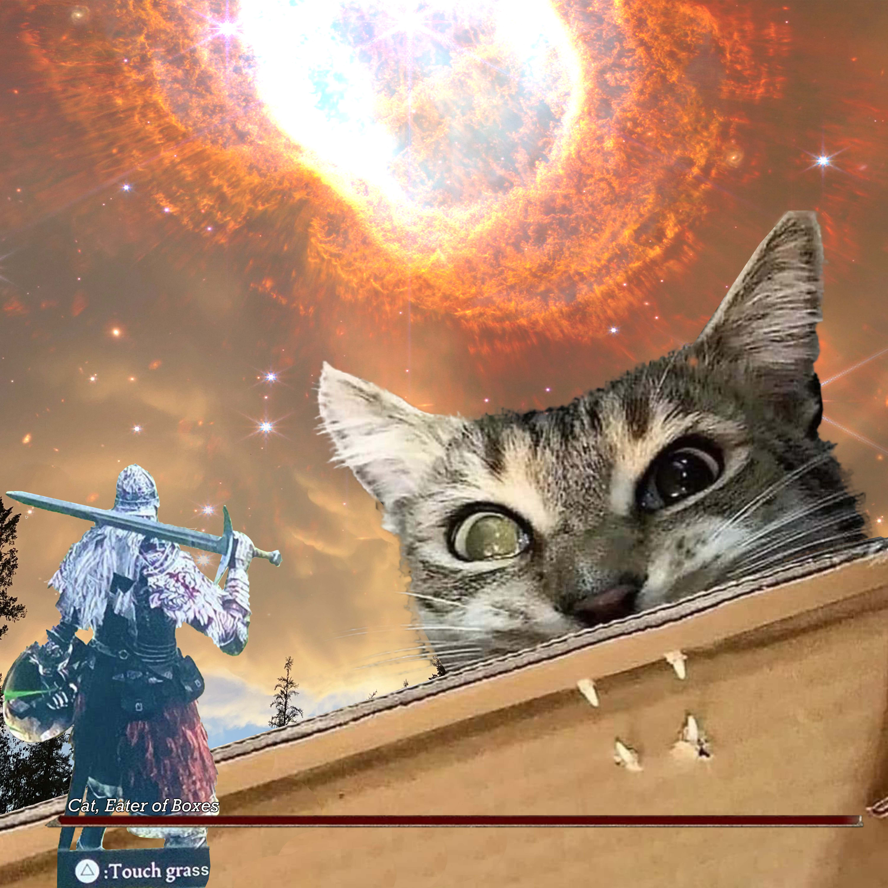

The Quad Knot is a great anchor that you can use for top-rope climbing. The 'Quad Anchor' is an anchor system which self-adjusts to keep an equal force on each anchor point.
It can be better than other methods of equalizing in certain situations.

This is an image I made in a photoshop class. It was used as a personality/introduciton exercise
Step One
Double over a cordelette so there are four strands of cord. Make sure the double fisherman’s knot of the cordelette is near one end.
Step Two
Tie a ‘load-limiting’ knot on one side of the cordelette. This can be either an overhand knot or a figure-8
(The figure-8 is easier to untie after loading. The overhand uses slightly less cord).